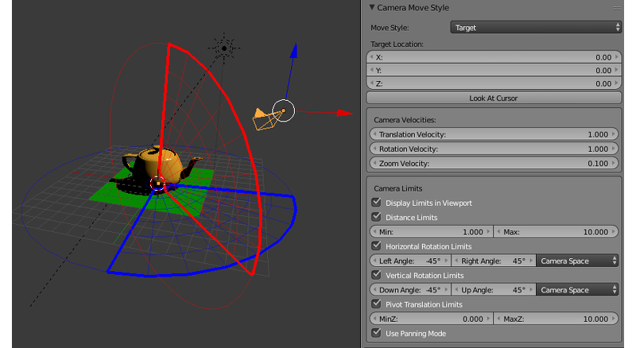
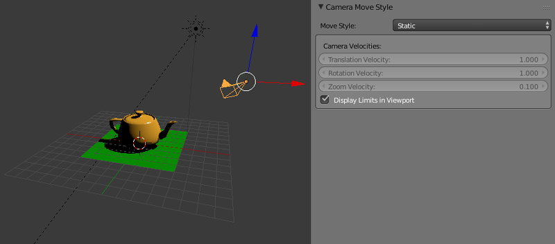

相机¶
移动方式和一般设置¶
相机设置在 相机(物体数据) 选项卡下 Properties 面板指定。

- 相机移动方式 > 移动方式
摄像机控制模式：
- 目标
默认摄像机围绕一个固定点（目标）旋转。中心点的位置可以改变（见 相机摇动）。
- 眼睛
在
Eye模式允许以第一人称视角旋转和平移。
- 悬停
在
Hover模式，相机将平行于水平面移动。通过使用附加的限制，可以创建一个相机指向中心点的平滑移动路径。
- 静态
在
Static模式下，相机可以通过动画或通过API调用移动。
- 看向光标 > 目标位置
在
Target模式可用。这是在相机中心点的位置。该看向Cursor按钮将当前的3D光标位置复制到该值。- 景深
在 景深 章节中描述。
相机速度设置现在是特优
- 相机移动方式 > 相机速度 > 移动速度
提供
目标，眼睛和悬停型相机。设置摄像机平移的速度。可能的值区间: \(\left[0,\ \infty \right)\) 。默认值是 1。- 相机移动方式 > 相机速度 > 旋转速度
提供
目标，眼睛和悬停型相机。设置摄像机平移的旋转速度。可能的值区间: \(\left[0,\ \infty \right)\) 。默认值是 1。- 相机移动方式 > 相机速度 > 缩放速度
提供
目标和悬停型相机。设置摄像机接近中心点的速度。可能的值区间: \(\left[0,\ 0.99\right]\) 。默认值是 0.1。
限制摄像机的运动¶
有几种限制/改变摄像机运动的设置。它们组合为 相机限制.
相机限制可以直接在Blender视图查看，如果 Display Limits in Viewport 参数已启用。
目标类型相机¶
- 相机移动方式 > 相机限制 > 距离限制
从相机到中心点设置最小和最大距离。允许值： 最小 \(\le\) 最大. 默认值: 最小 = 1, 最大 = 10. 默认情况下禁用。

- 相机移动方式 > 相机限制 > 水平旋转限制
限制摄像头水平（围绕在Blender的Z世界轴）对点的转动。旋转沿
左角和右角值之间的圆的弧进行。旋转弧对应于从左角到右角逆时针运动。默认值：左角= -45°，直角= 45° 。默认情况下禁用。

- 相机移动方式 > 相机限制 > 垂直旋转限制
限制摄像头水平（围绕在Blender的Z世界轴）对点的转动。旋转沿
左角和右角值之间的圆的弧进行。旋转弧对应于从左角到右角逆时针运动。默认值：左角= -45°，直角= 45° 。默认情况下禁用。
- 相机移动方式 > 相机限制 > 中心点移动限制
限制摄像机的中心点移动。默认值： 最小Z = 0, 最大Z = 10. 在视口中不渲染。
- 相机移动方式 > 相机限制 > Use Panning Mode
使相机平移。
眼类型相机¶

- Blend4Web > Horizontal Rotation Limits
限制摄像头水平（围绕在Blender的Z世界轴）对点的转动。旋转沿
左角和右角值之间的圆的弧进行。旋转弧对应于从左角到右角逆时针运动。默认值：左角= -45°，直角= 45° 。默认情况下禁用。

- 相机移动方式 > 相机限制 > 垂直旋转限制
限制垂直（在Blender的局部X轴）摄像头围绕对应点转动。旋转沿
向下角和向上角值之间的圆的弧进行。旋转弧对应于逆时针运动从向下角到最多角。默认值：下角= -45°，上角= 45°。默认情况下禁用。

悬停类型相机¶

- 相机移动方式 > 相机限制 > 水平移动限制
沿着Blender的世界X轴支点的限制运动。允许值：Min \(\le\) Max. 默认值: MinX = -10, MaxX = 10. 默认情况下禁用。
- 相机移动方式 > 相机限制 > 垂直移动限制
沿着Blender的世界X轴支点的限制运动。允许值： Min \(\le\) Max. 默认值: MinY = -10, MaxY = 10. 默认情况下禁用。
- 相机移动方式 > 相机限制 > Use Zooming
允许用户从中心点点调整摄像机的焦距和缩小。如果禁用此参数，相机将始终保持在离支点的距离固定。默认情况下禁用。
- 相机移动方式 > 相机限制 > 距离限制
设置最小和最大距离从相机到摄像机的视图方向与水平基准面（默认情况下Blender的世界XOY平面）之间的交点。允许值： Min \(\le\) Max. 默认值: Min = 1, Max = 10. 默认情况下禁用。
- 相机移动方式 > 相机限制 > 垂直旋转限制
限制抬高相机的角度（摄像机的视线与水平面之间的夹角可能的取值区间： 0° \(\le\) Down \(\le\) Up \(\le\) 90°. 默认值: Down = 0°, Up = 90°.
- 相机移动方式 > 相机限制 > Zero Level
基准面和坐标原点之间的距离。默认设置为零。
如果 Blend4Web>使用Zooming 设置打开，同时设置距离和倾斜角度的限制，在垂直平面以限定在相机移动路径。

设置不正确的距离或仰角限制将禁用此参数。
- 相机移动方式 > 相机限制 > Use Horizontal Rotation
允许摄像头在Blender的XOY平面对着中心点旋转。默认情况下启用。

静态相机
这种类型的相机不具有限制，因为它不能直接由用户控制。
限制设置的特殊性
EYE/TARGET相机，交换 左/右 或 下/上 值导致移动圆弧相反。

当限制相机的水平和垂直旋转，则可在下列坐标空间之间进行选择：
- 摄像机空间
所有的角度是相对于初始相机位置和取向测量。
- 世界空间
水平角度是相对于世界空间Y轴测量;垂直角度是相对于世界空间中Blender的XOY平面上测量。
默认值：相机Space 。
水平限制目标相机的例子：

垂直限制目标相机的例子：

视口对齐¶
如果物体父级的相机的参数设置为 视口对齐 ，在 Object 面板下的 Relations 选项卡中。

使用这些设置，物体可以对齐到激活的摄像机，这样该物体将保持在屏幕同一个地方，无关摄影机的位置和转动。这是用于创建 UI 元素尤其有用。
这张照片显示可以如何使用视区对齐选项的示例。
- 视口对齐
此参数启用和禁用以下的所有参数。默认情况下禁用它。
- 对齐
此参数指定物体将与屏幕的哪一侧的对齐方式。它可以具有下列值之一。
Top-Left- 将物体对齐到视口的顶部左上角。Top- 将物体对齐到视口的顶部。Top-Right- 将物体对齐到视口的顶部右上角。Left- 将物体对齐到视口的左边。Center- 将物体对齐到视口的中央。Right- 将物体对齐到视口的右侧。Bottom-Left- 将物体对齐到视口的底部左侧。Bottom- 将物体对齐到视口的底部。Bottom-Right- 将物体对齐到视口的底部右边。
默认值为
Center.- 距离
此选项指定对齐的物体和相机之间的距离。默认设置为 10。
- 适合相机
按下此按钮，你可以使对齐的物体看起来在引擎中和Blender视口同样方式显示。它可以用于预览对齐结果。
相机控制API¶
详细的API模块文档：link.
照相机的位置和其空间取向是由控制模式来定义。在 EYE，TARGET 和 HOVER 模式，控制方式有若干限制：例如，相机的垂直轴总是沿着世界Y轴对齐，并且相机一直对焦到中心点。 STATIC 模式相机有没有这样的限制，这使得它更适合当你需要更完整的控制的情况下 ，如程序动画。
相机控制主要功能都位于 camera 模块。其中一些（针对特定控制模式）的有哪些用适当的前缀开头的名字：static_，eye_，target_ 和 hover_ 。其它功能可在任何模式下使用。
控制模式设置¶
若要更改控制模式，完全定义相机的行为，可以使用以下方法: static_setup(), eye_setup(), target_setup() 和 hover_setup(). 这些方法接收一个包含一组可选的参数的物体，可以用于设置相机的位置、 旋转、 可用的限制，等等。
var camera = m_scenes.get_active_camera();
var POS = new Float32Array([1,1,1]);
var LOOK_AT = new Float32Array([0,0,0]);
var EYE_HORIZ_LIMITS = { left: Math.PI/4, right: -Math.PI/4 };
var EYE_VERT_LIMITS = { down: -Math.PI/4, up: Math.PI/4 };
var TARGET_DIST_LIMITS = { min: 1, max: 10 };
var HOVER_DIST_LIMITS = { min: 1, max: 10 };
var HOVER_ANGLE_LIMITS = { down: 0, up: -Math.PI/4 };
var HOVER_HORIZ_TRANS_LIMITS = { min: -5, max: 3 };
var HOVER_VERT_TRANS_LIMITS = { min: -1, max: 1 };
...
// setup STATIC camera by defining the new position and the new look-at point
m_cam.static_setup(camera, { pos: POS, look_at: LOOK_AT });
// setup STATIC camera by defining the new look-at point and keeping the existing position
m_cam.static_setup(camera, { look_at: LOOK_AT });
// setup STATIC camera by defining the new position and keeping the existing orientation
m_cam.static_setup(camera, { pos: POS });
// setup EYE camera with horizontal rotation limits
m_cam.eye_setup(camera, { pos: POS, look_at: LOOK_AT,
horiz_rot_lim: EYE_HORIZ_LIMITS });
// setup EYE camera with vertical rotation limits
m_cam.eye_setup(camera, { pos: POS, look_at: LOOK_AT,
vert_rot_lim: EYE_VERT_LIMITS });
// setup TARGET camera with distance limits and panning mode
m_cam.target_setup(camera, { pos: POS, pivot: LOOK_AT,
dist_lim: TARGET_DIST_LIMITS, use_panning: true });
// setup HOVER camera on a fixed distance (without zooming) relatively to its pivot
m_cam.hover_setup(camera, { pos: POS, pivot: LOOK_AT });
// setup HOVER camera with zooming (distance + angle limits)
m_cam.hover_setup(camera, { pos: POS, pivot: LOOK_AT,
dist_lim: HOVER_DIST_LIMITS, hover_angle_lim: HOVER_ANGLE_LIMITS });
// setup HOVER camera with translation limits
m_cam.hover_setup(camera, { pos: POS, pivot: LOOK_AT,
horiz_trans_lim: HOVER_HORIZ_TRANS_LIMITS,
vert_trans_lim: HOVER_VERT_TRANS_LIMITS });
// setup HOVER camera with horizontal rotation enabled
m_cam.hover_setup(camera, { pos: POS, pivot: LOOK_AT, enable_horiz_rot: true });
HOVER 模式的主要特征在于，距离和仰角范围限制在一个确定的 路径 来朝向中心点运动。相机会一直在这条路径上，所以其最终位置可能跟从 hover_setup() (基本的，它是投射到路径上) 方法返回的不一样。如果你需要设置相机的位置在一些路径，你可以使用 hover_setup_rel() 方法设置相对极限。
var camera = m_scenes.get_active_camera();
var POS = new Float32Array([1,1,1]);
var PIVOT = new Float32Array([0,0,0]);
...
// setup HOVER camera with maintaining the given camera position and
// ability to zoom-in and zoom-out equally
m_cam.hover_setup_rel(camera, { pos: POS, pivot: PIVOT, dist_interval: 2,
angle_interval: Math.PI/4 });
当前相机模式可以通过检查 is_static_camera(), is_eye_camera(), is_target_camera(), is_hover_camera() 或 get_move_style() 方法：
var camera = m_scenes.get_active_camera();
...
if (m_cam.is_static_camera(camera))
console.log("STATIC camera!");
if (m_cam.get_move_style(camera) == m_cam.MS_EYE_CONTROLS)
console.log("EYE camera!");
注解
如果您需要更改相机的行为的某些方面，你可以使用下面描述的方法。
平移和旋转¶
要旋转 STATIC 类型的相机，您需要使用 static_get_rotation() 和 static_set_rotation() 方法。在这些方法中，旋转通过一个四元数来定义。
var camera = m_scenes.get_active_camera();
...
// rotation through a quaternion
var _quat_tmp = new Float32Array(4);
var old_quat = m_cam.static_get_rotation(camera, _quat_tmp);
var new_quat = m_quat.rotateX(old_quat, Math.PI/2, old_quat)
m_cam.static_set_rotation(camera, new_quat);
对于 EYE，TARGET 和 HOVER 类型摄像机，旋转使用的是 球面坐标 使用 eye_rotate(), target_rotate(), hover_rotate() 和 rotate_camera() 方法：
var camera = m_scenes.get_active_camera();
...
// rotate by given delta angles
m_cam.eye_rotate(camera, Math.PI/6, Math.PI/2);
// set absolute rotation in world space
m_cam.eye_rotate(camera, Math.PI/6, Math.PI/2, true, true);
摄像机的当前球面坐标可通过使用 get_camera_angles() 方法获得：
var camera = m_scenes.get_active_camera();
var _vec2_tmp = new Float32Array(2);
...
// get camera orientation in spherical coordinates
var angles = m_cam.get_camera_angles(camera, _vec2_tmp);
phi = angles[0];
theta = angles[1];
获取摄像机的位置可以通过获得使用 get_translation() 和 set_translation() 方法。对于 TARGET 和 HOVER 模式，这意味着整个模型，包括摄像机的位置和中心点同时移动。
var camera = m_scenes.get_active_camera();
var _vec3_tmp = new Float32Array(3);
...
// get camera position
var pos = m_cam.get_translation(camera, _vec3_tmp);
// set new position
var new_pos = m_vec3.set(1, 0, 2, pos);
m_cam.set_translation(camera, new_pos);
其他相机移动方法：
target_set_trans_pivot(), target_set_pivot_translation(), hover_set_pivot_translation() - 同时设置相机的位置和中心点;
target_get_distance(), target_set_distance() - 基于中心点移动位置;
static_set_look_at(), eye_set_look_at() - 同时设置相机的位置和视点;
注解
因为相机是一个场景物体 transform 模块方法也可以使用。但是，由于每个控制模式以不同的方式影响相机运动，结果可能不同于那些预期。
限制设置¶
相机限制可供 EYE, TARGET 和 HOVER 类型相机。若要设置一个特定的限制，您需要使用特定的方法 ︰
var camera = m_scenes.get_active_camera();
var _limits_tmp = {};
var EYE_HORIZ_LIMITS = { left: Math.PI/4, right: -Math.PI/4 };
...
// get limits
m_cam.eye_get_horizontal_limits(camera, _limits_tmp);
// set limits
m_cam.eye_set_horizontal_limits(camera, EYE_HORIZ_LIMITS);
限制存在检测可以通过 has_distance_limits(), has_horizontal_rot_limits(), has_vertical_rot_limits(), has_horizontal_trans_limits() and has_vertical_trans_limits() 方法获得.
注解
在 HOVER 模式下，相机总是有距离和仰角的限制。如果这些限制都没有设置，它们会自动计算锁定摄像头当前的位置相对中心点。
注解
已启用的相机限制可以影响它的位置和空间取向，由 API 函数设置。


{kind=link}
{kind=link}
{kind=link}
{kind=link}
{kind=link}